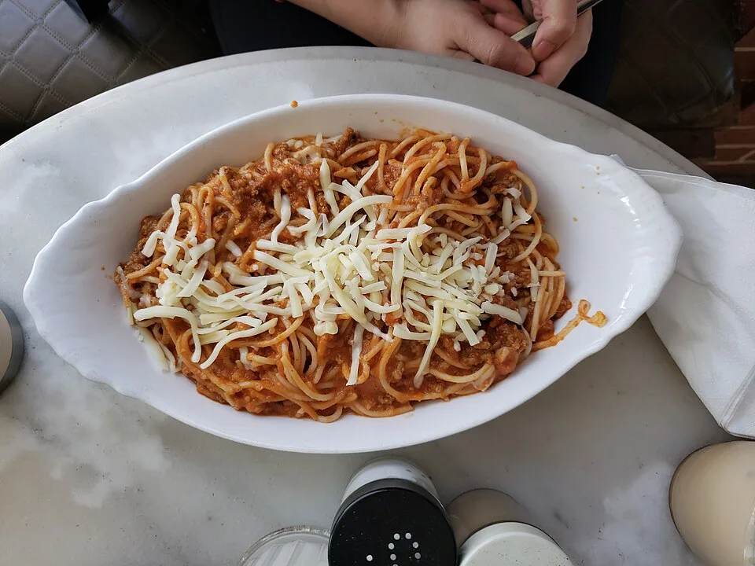

1. Spaghetti bolognaise
Photo d’illustration : Spaghetti Bolognese - Figaros, Brighton 2023-10-06.jpg
Auteur : Andy Li
Fichier original sur Wikimedia Commons · CC0
Adaptations : réduction de taille, conversion en WebP ; recadrage à l’affichage. L’image conserve sa licence d’origine.